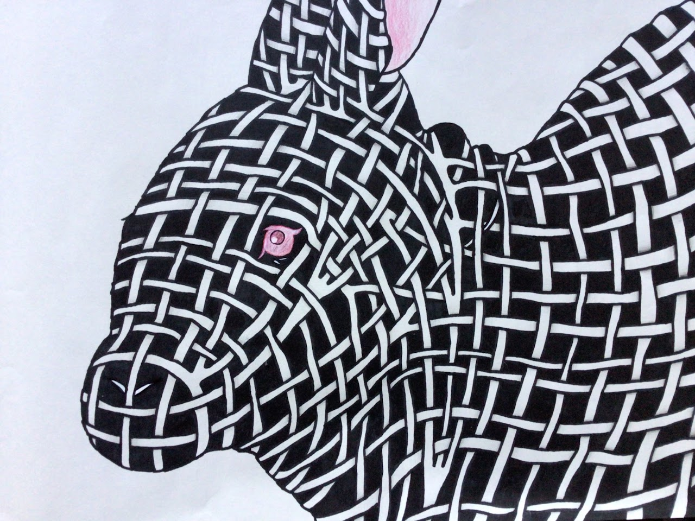
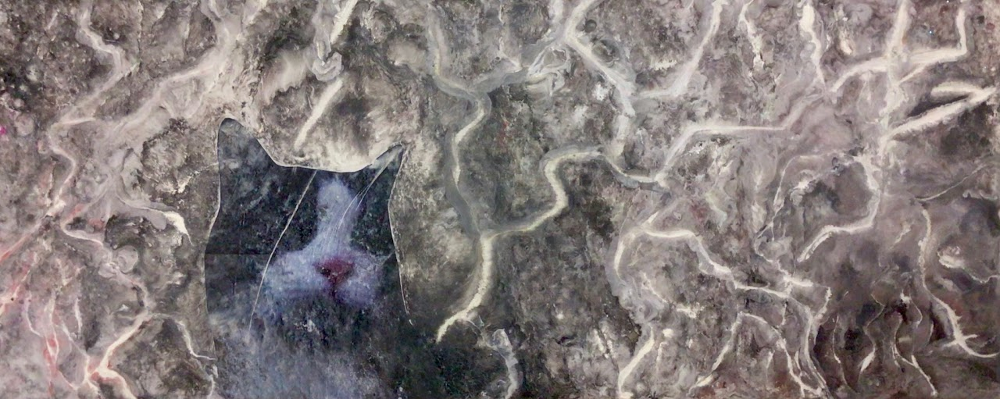
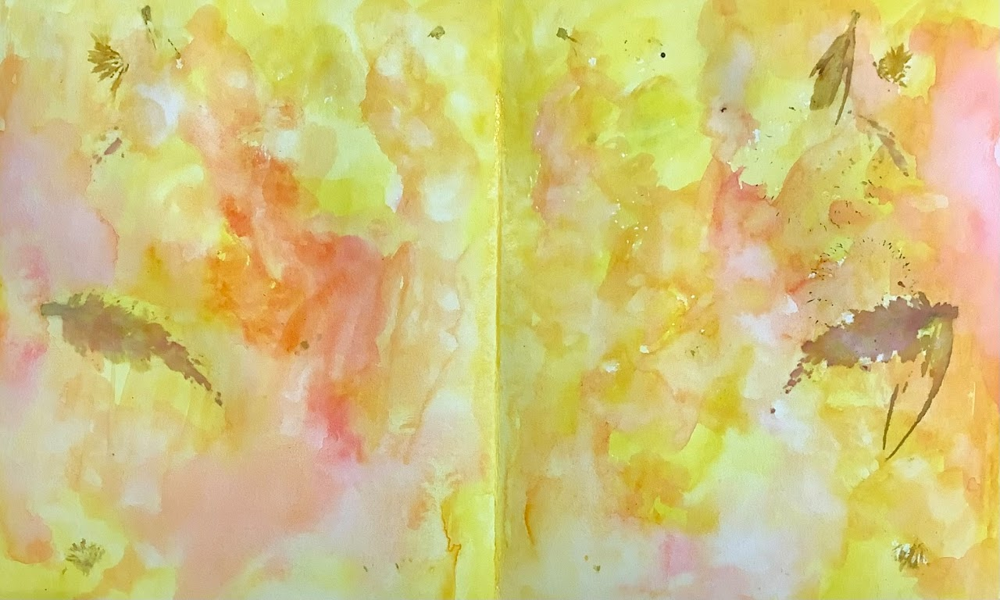
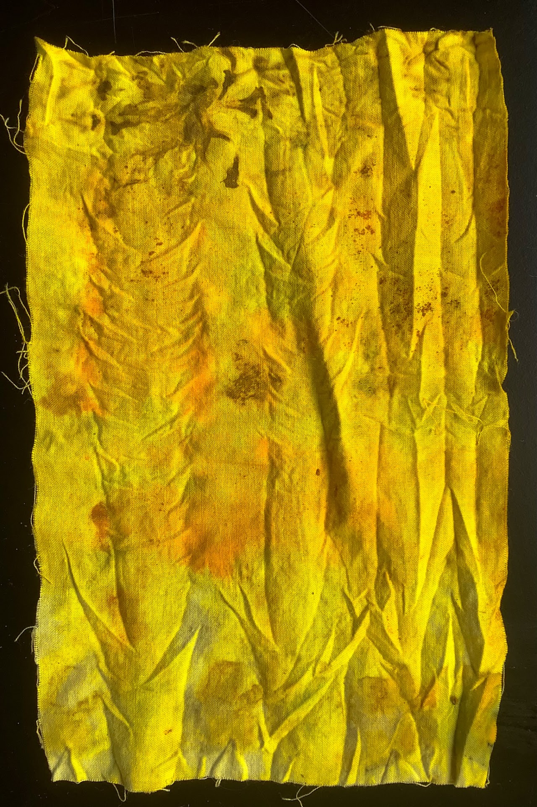
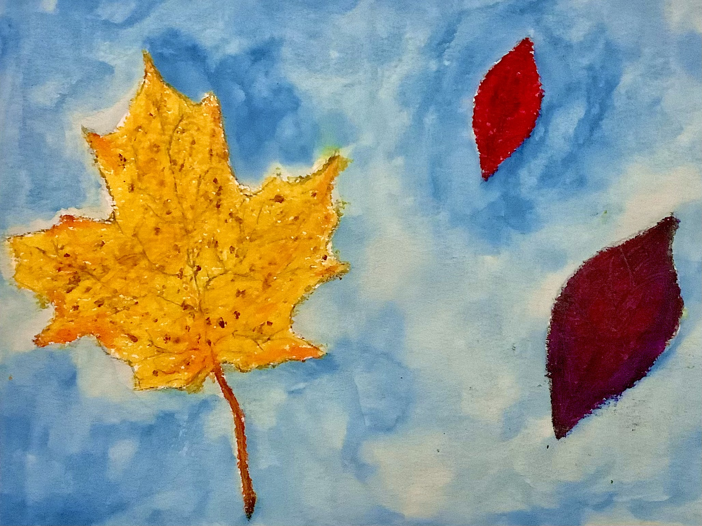

"Angry Sea," ink printing

"Rabbit," sharpy, pencil, and colored pencil drawing

"The View from Quaker Hill," acrylic painting

"East Tower Cottag," ceramic house

"A Caterpillar's Day," collage painting

"Skaket Beach," watercolor painting

"The Screeching Trees," pen, pencil, and tortillon drawing

"Linus Mowing," collage painting

"Daphnis and the Pumpkin Under the Dark Tree," watercolor pencil painting with details in pen and shading in pencil

"In the Tortured Sky," encaustic painting with embedded photo

"At Quaker Hill in Autumn," acrylic painting

"Living On," acrylic painting

"The Charge," ink painting

"Glorious Angel," steamed flower print with watercolor

Prayer flag, bundle-dyed

"Autumn," plein air oil painting

"Leaves," oil pastel drawing with watercolor